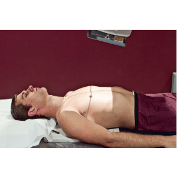
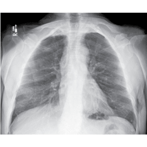
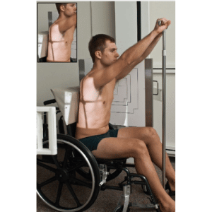

Em D.D. / elevado ou sentado. AP, braços estendidos e abduzidos ao corpo.
35×35 / 35×43 transversal / longitudinal, sob as costas do paciente, posicionado em relação aos ombros.
⊥ ao chassi na horizontal / vertical , orientado para o centro do tórax.
+/- 1,20 m.


Observação: Incidência realizada sem bucky.
Em perfil, preferencialmente esquerdo, PMS paralelo LCE braços elevados sobre a cabeça.
30X40 longitudinal, posicionado em relação ao ombro.
⊥ na horizontal orientado para a lateral do tórax. (nível T7).
1,80 m / com bucky.

Observação: Em apnéia após inspiração profunda.